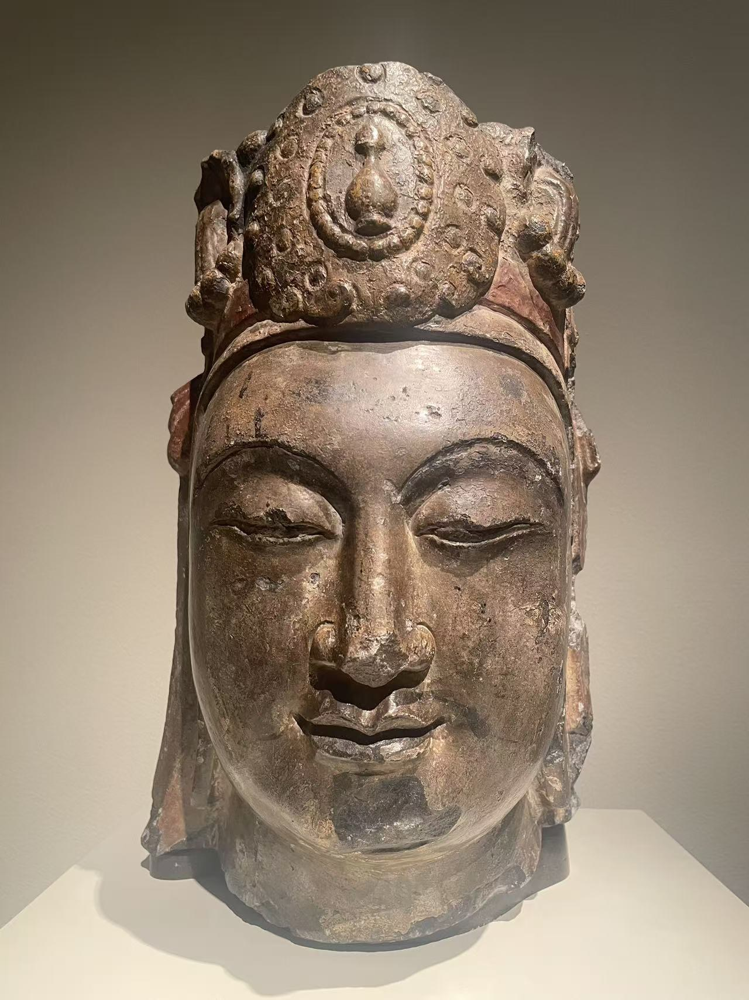
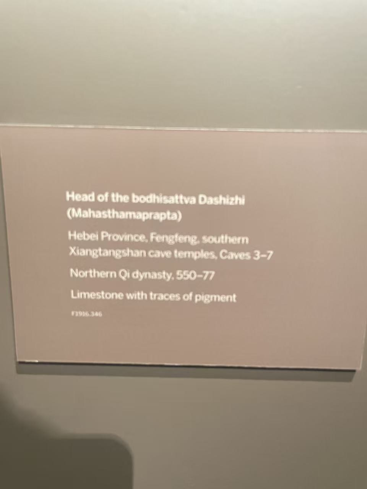

XIANGTANGSHAN / 南响堂第四至第六窟范围（馆方归属）
大势至菩萨头像
Head of the Bodhisattva Mahasthamaprapta (Dashizhi)


- 收藏
- 弗利尔美术馆
- 编号
- F1916.346a-b
- 年代
- 北齐（550—577）
- 材料
- 石灰岩，残留彩绘
- 原属洞窟
- 南响堂第四至第六窟范围（馆方归属）
作品札记
冠顶的小瓶形标识位于面部正上方，是馆方辨认为大势至菩萨的重要依据。瓶形饰件之外，冠沿、耳侧装饰与脸部的光滑石面也保存得较清楚。
弗利尔于1916年从迪克兰·凯莱基安购得，1920年进入馆藏。馆方目前将它归于南响堂第四至第六窟范围；具体原窟仍未落实。
资料说明
完整编号为F1916.346a-b，现场展签简称F1916.346。展签记第三至第七窟，响堂山项目记第三至第六窟，馆方目前记第四至第六窟；这些都是范围归属。
现场展签

